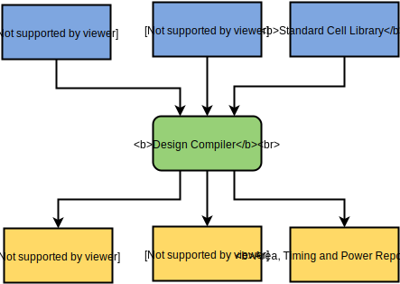
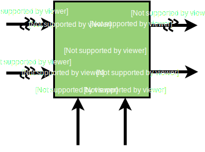

One of the most important steps of the ASIC design flow is the RTL to GDSII implementation. During this process the RTL code (normally described in the behavorial logic) should be translated into a gate level netlist.
The Design Compiler from Synopsys is a tool that fits well in the hardware synthesis and this tutorial will show briefly how it can be used for this purpose.
In the Figure (1) can be seen the basic tool flow of the Design Compiler. It has as inputs the design file (Verilog, VHDL or SystemVerilog), the Standard Cell library (a database file format which is the de facto industry standard for data exchange of integrated circuit or IC layout atwork) and the commands to execute the tool during the synthesis process (scripts in tcl). The outputs generated by the Design Compiler are the Gate Level Netlist (the synthesized RTL), sdc constraints and also reports about estimated area, power and the timing of the netlist.
 Figure (1): Synopsys Design Compiler basic tool flow{kind=link}
Learning from an example
In order to show the synthesis process of an IP-Core, the block SQRTLOG depicted in the Figure (2) will be used as an example.
 Figure (2): SQRTLOG module{kind=link}
The module SQRTLOG computes four functions according to the signal op as can be seen below:
- op = 0, data_out = sqrt(data_in)
- op = 1, data_out = log2(data_in)
- op = 2, data_out = log10(data_in)
- op = 3, data_out = ln(data_in)
The signal done indicates that the computation is done. The SystemVerilog codes of the SQRTLOG (SQRTLOG.sv) and its testbench (top.sv) are available in GitHub.
The synthesis of the SQRTLOG can be achieved as follows: in order to run the Design Compiler with the Makefile below just type make dc_shell in the terminal. This command calls the dc_shell with the parameter -f scr.tcl, in which runs the tcl script scr.tcl.
sim: clean vcs -sverilog top.sv ./simv dc_shell: dc_shell -f scr.tcl clean: rm -rf simv simv.daidir csrc ucli.key
define_design_lib WORK -path ./design analyze -format sverilog SQRTLOG.sv elaborate SQRTLOG create_clock -period 500 {clock} compile write_sdc "SQRTLOG.sdc" report_timing > "time.rpt" report_area > "area.rpt" report_power > "power.rpt" quit
What the script does is create the directory design where will be created the files from netlist, setup the clock period to 500 nanoseconds, translate the RTL into GDSII and generate the report files ("SQRTLOG.sdc", "time.rpt", "area.rpt" and "power.rpt").
The script and Makefile are also available in GitHub.